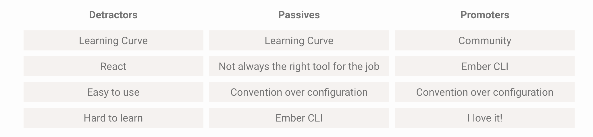
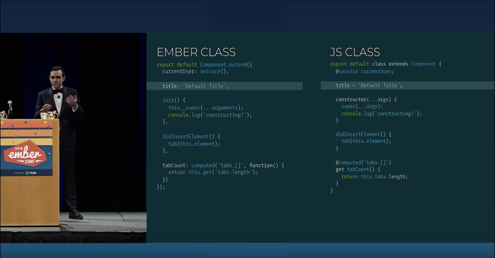

Survey results always comment on the learning curve
2017 Results
2018 Results
Needs "Simplification of the mental model for Ember."
"If Ember were easier to learn..."
These are valid comments!
class syntax + decorators (!?)
Tom & Yehuda showed off how they'd like to see Ember written in the future
ES classes are already supported (RFC)
But what about decorators?
ember install ember-decorators
// http://babeljs.io/blog/2015/03/31/5.0.0/#stage-1:-decorators
@concat("firstName", "lastName", " ") fullName;
function concat(...args) {
let sep = args.pop(); // " "
return function(target, key, descriptor) {
descriptor.initializer = function() {
return args.map(arg => this[arg]).join(sep);
}
}
}
// http://babeljs.io/blog/2015/03/31/5.0.0/#stage-1:-decorators
@autobind
getFullName() {
return `${this.firstName} ${this.lastName}`;
}
function autobind(target, key, descriptor) {
var fn = descriptor.value;
delete descriptor.value;
delete descriptor.writable;
descriptor.get = function () {
var bound = fn.bind(this);
Object.defineProperty(this, key, {
configurable: true,
writable: true,
value: bound});
return bound;
};
}
// before
const FooComponent = Component.extend({});
FooComponent.reopenClass({
positionalParams: ['bar', 'baz']
});
// after
class FooComponent extends Component {
static positionalParams = ['bar', 'baz'];
}
Still considered experimental - depends on TC39; however, is commited to keeping up with the changes
Ember Inspector no longer works for models, but they're aware of it
Increased file size (for now)
"Running the decorator code through gzip and uglification results in a final file size of 293 bytes, so about 0.25 kbs per file that includes decorators."
No ember-cli support yet, still uses old blueprint (issue)
Can provide feedback on class syntax + decorators early
Can migrate code over incrementally - no need to convert all at once
(code mod will help here)
No longer relies on the Ember object model, instead uses native JS (lower barrier to entry for new devs)
Declarative, clean syntax. Easier to read and reason about.
Really great documentation for the addon